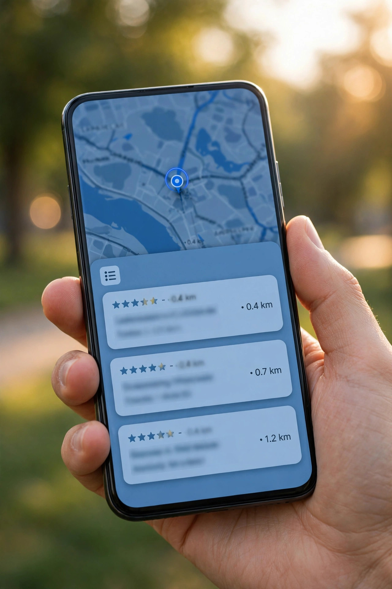
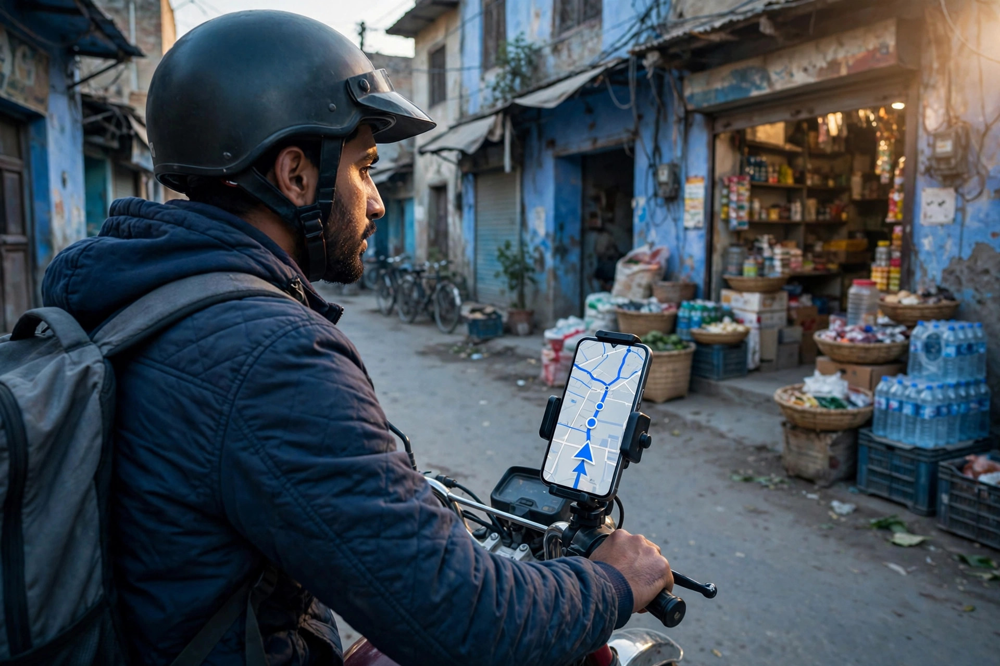

Every business owner who has searched for their own shop on Google Maps has asked the same question: why is that competitor above me? The answer is not a secret formula or a favour. Google has openly described the three ideas behind local rankings for years. Once you understand them, the rankings stop looking random, and it becomes clear which parts you can actually improve.
The three factors are relevance, distance and prominence. Every local search weighs all three, though not always equally. Let us take them one at a time, in the order a business owner should think about them.
Relevance: Does Your Profile Match the Search?
Relevance asks a simple question: how well does this business fit what the person typed? If someone searches "AC repair", Google wants businesses that clearly do AC repair. It reads your primary category first, then your additional categories, services list, description and even the words customers use in reviews.
This is the factor you control most. A workshop listed under a vague category, with no services filled in, gives Google very little to match. The same workshop with an accurate category and a services list naming its real jobs matches far more searches. Filling in your profile completely and honestly is relevance work, and it is the foundation of our local SEO and Google Business Profile service.

Distance: How Far Is the Searcher From You?
Distance is exactly what it sounds like: how far each possible result is from the location in the search. When someone types a place name, Google measures from that place. When they type "near me", it measures from where their phone is standing. A business two streets away will often outrank a better-known business across town for that particular searcher.
You cannot change distance, and you should not try to fake it. Moving your map pin to a busier road or inventing a second address breaks Google's rules and can get the profile suspended. What you can do is accept what distance means: your strongest audience is the people nearest you, and your profile should speak to them first. Businesses that serve customers at their homes can set honest service areas, which tells Google the territory they genuinely cover.
Prominence: How Established Does Your Business Look?
Prominence is about reputation and presence. Google considers how well known a business appears to be: the number and quality of its reviews, how much information about it exists around the web, and whether its details agree everywhere they appear. A business mentioned in directories, local pages and its own website, with steady genuine reviews, looks established. A business with a bare profile and nothing else online looks uncertain.
This is the slow factor, built over months rather than days. Honest reviews are the most direct way to grow it, which is why our guide on getting more Google reviews honestly matters so much for rankings. Consistent name, address and phone details across the web are the other half, and ordinary offline fame counts too: a genuinely well-known local landmark can rank strongly because the whole town knows it.

How the Three Factors Work Together
No single factor decides everything. A very relevant business a little further away can beat a close business that barely matches the search. A famous business can outrank a nearer, lesser-known one for a broad search, but lose for a very specific service it does not list. Google balances the three for every search, which is why results shift between search terms and between locations. Checking your ranking from your own shop, where distance favours you, gives a flattering picture; the honest test is how you appear to a customer in the areas you serve.
Myths About Maps Rankings
- "Paying Google moves you up." It does not. Normal Maps positions are earned, not sold.
- "Stuffing keywords into my business name helps." Google requires your real business name, and adding slogans or town names to it can get the name edited or the profile suspended.
- "One big push fixes rankings forever." Profiles that go quiet while competitors keep collecting reviews and photos slowly slide. Rankings reward maintenance.
- "My ranking is the same for everyone." Because of distance, there is no single ranking. There is only how you appear to each searcher, in each place, for each search.

What to Work On, In Order
Start with relevance, because it is fully in your hands: correct category, complete services, accurate hours, a clear description. Then maintain prominence steadily: earn honest reviews, reply to them, add real photos, and keep your details consistent everywhere. Distance takes care of itself. Businesses that work through that order, then keep a simple monthly rhythm, give Google every legitimate reason to show them. The basics of local SEO article explains how these habits fit together as one system.
Frequently Asked Questions
Why does my competitor rank above me on Google Maps?
Usually because of a mix of the three factors: their profile may match the search more clearly, they may be closer to the person searching, or they may look more established through reviews, photos and consistent details. Check the search from the customer's location before assuming anything is wrong.
Can I pay Google to rank higher on Maps?
No. The normal Maps and local pack listings are not for sale. Google does sell separate clearly labelled ads in some areas, but the organic positions are decided by relevance, distance and prominence, and no payment changes those results.
Why do my Maps rankings change from place to place?
Because distance is part of the ranking, results are personal to where the searcher is standing. A business can be first for someone on its own street and lower for someone across town. This is normal behaviour, not a penalty or a problem with your profile.
What is the fastest legitimate way to improve my Maps visibility?
Start with accuracy and completeness: the right primary category, a full services list, correct hours and your real location pin. Then build genuine reviews and add real photos regularly. These steps strengthen relevance and prominence, the two factors you can influence.
Want More Customers From Google?
Call 0327 7350830 or email seozaheer14@gmail.com. Zaheer Seo Expert, Layyah - Rajan Shah Road, Rana Nagar, Chak 116 TDA, Pakistan. Open 24 hours.
Get Your SEO Strategy →